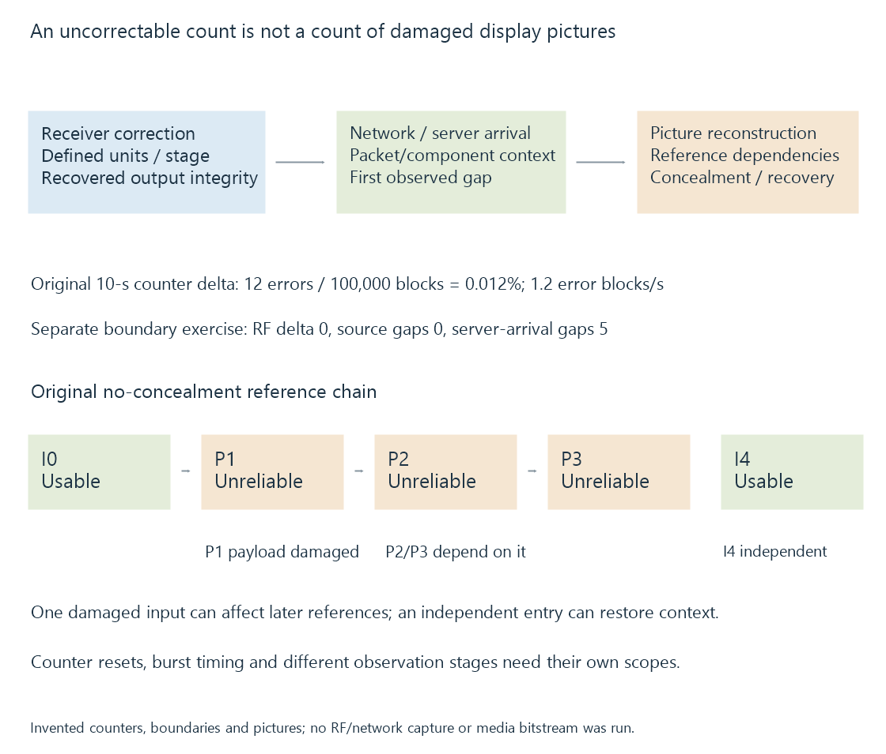

Uncorrectable reception errors
Uncorrectable reception errors indicate data the receiver’s defined correction stage could not recover, with counter scope and later media dependencies determining their significance.
Error protection can correct some received-data damage, but it has defined limits. An uncorrectable reception error reports an integrity problem the receiver’s stated correction stage could not resolve.
Its count is not automatically a count of damaged movie frames. The reporting unit, stage and interval need to be identified first.
Corrected input and bad output are different results
An earlier-stage error can be repaired before the receiver emits usable data. An uncorrectable block or transport error instead concerns information that remains unreliable at its declared output stage.
Receiver APIs report different measures: bits, blocks, transport flags, continuity-related observations or derived quality indices. The device’s definition establishes what one increment means.
SiliconDust’s diagnostic material, for example, separates RF, transport and network fields. Linux’s frontend documentation likewise gives statistic availability and counter/stage semantics.

Cumulative values need interval differences
Use an original counter exercise:
| Observation | Error-block counter | Total-block counter |
|---|---|---|
| At 0 s | 1000 | 500,000 |
| At 10 s | 1012 | 600,000 |
The interval has twelve additional error blocks among 100,000 additional blocks:
Error rate = (1012 − 1000) / 10 = 1.2 error blocks/s
Block-error fraction = 12 / 100,000 = 0.00012 = 0.012%
Dividing the whole lifetime count 1012 by only the latest interval’s blocks mixes different scopes.
If the counter later becomes three after a reset or resource change, its difference from 1012 is not a meaningful negative number of reception errors. The continuity/reset context must be re-established.
The table is invented, not a tuner measurement.
The same interval count can hide different timing
Twelve errors spread across ten seconds and twelve errors concentrated within one-tenth of a second have the same ten-second total.
Their effects on required tables, media packets or picture reconstruction can differ. A short burst can damage a critical entry point or reference relationship, while another interval may affect different components.
A coarse average therefore does not describe which data was affected or when the first visible problem occurred.
Transport discontinuity can arise later
A source can emit recovered packets correctly while the network or receiving process loses some of them. Later packet gaps are not automatically proof of uncorrectable RF errors.
For MPEG-TS, continuity observations also need packet/PID context and the applicable rules, including payload, discontinuity indications and resets. A raw counter jump should not be called a physical reception fault solely because the final picture broke.
MPEG-TS programme tables develops the component context. The source’s reception and output observations, then the server’s arrival observations, locate the missing-data boundary.
A boundary-specific observation narrows the location
Use an original ten-second comparison for one declared component and continuous counter context:
| Model observation | Result |
|---|---|
| Receiver uncorrectable-error delta | 0 |
| Relevant source-output continuity gaps | 0 |
| Same component’s server-arrival continuity gaps | 5 |
Under the model’s payload/continuity assumptions, the first new gap appears between the observed source output and server arrival. A later visible artifact does not turn the receiver’s zero delta into five RF errors.
This does not identify the exact network or receiving-process cause. It identifies the boundary containing the first observed loss. Another model with errors already present at the source output would locate a different starting point.
The table is invented and assumes the same packet/component context at both observations. No tuner or network capture was made.
One unreliable reference can affect later pictures
Consider this original simplified prediction model:
| Picture | Reference | Declared input state |
|---|---|---|
| I0 | None | Usable |
| P1 | I0 | Its coded payload is damaged |
| P2 | P1 | Its own payload is usable |
| P3 | P2 | Its own payload is usable |
| I4 | None | Usable independent entry |
Assume this model has no successful concealment and every dependency on an unreliable reference remains unreliable.
P1 is affected by its own payload. P2 and P3 are then affected by their reference chain even though their own modeled payloads are usable. I4 can restore an independent usable context.
A receiver’s one error increment cannot therefore be translated directly into one damaged presentation picture. The association depends on which packets/components and prediction state were affected.
Real codecs and decoders can conceal, recover or propagate damage differently. The table is a dependency exercise, not an executed bitstream or a guarantee about a particular client.
Buffering and transcoding operate on the supplied data
A larger client reserve can absorb arrival variation when usable media eventually arrives. It cannot reconstruct arbitrary programme information that the source never recovered.
A transcoder can also encounter or conceal upstream damage and encode a result containing it. Its selected encoder being hardware-accelerated does not establish that the original input was error-free.
See Also
- TV signal quality and decoding margin
- TV signal strength
- Dropped video frames during playback
- MPEG-TS Program Tables: PAT and PMT